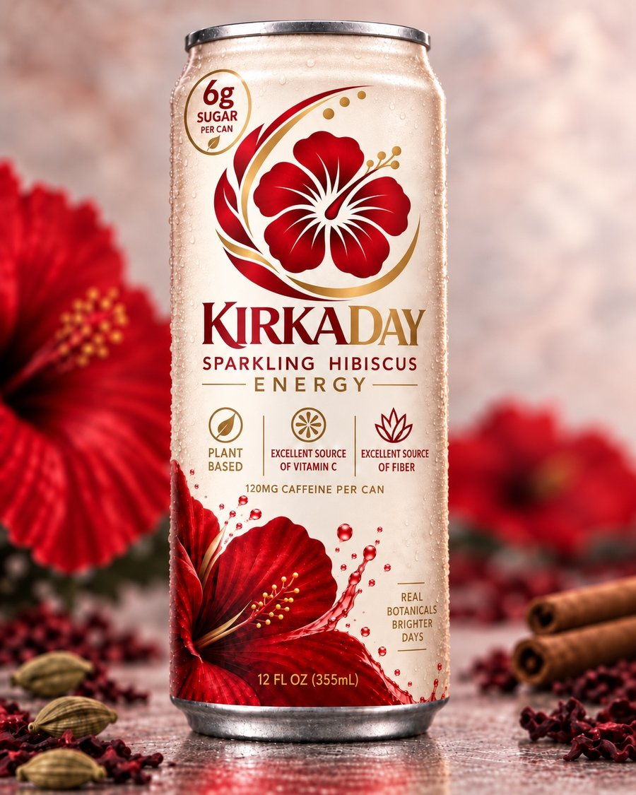

Karkadeh
كركديه
Sudan · Egypt · Arabia
Steeped strong, served cold, and poured for guests — deeply tied to hospitality and to the table when a fast is broken.
Sparkling hibiscus energy. The real flower steeped — not a flavor built to imitate it — with tamarind, cardamom, cinnamon and citrus. 120mg of caffeine, 6g of sugar, and an ingredient list we're happy to read out loud.

A 12oz slim can with enough caffeine to matter and little enough sugar to drink daily. No taurine stack, no synthetic flavor, no crash engineered into the second half of the can — and the vitamin C comes from the flower.
Hibiscus travelled almost everywhere, and nearly everywhere it landed, somebody decided to drink it. Different names, different spices, different tables — the same remarkable plant.
Steeped strong, served cold, and poured for guests — deeply tied to hospitality and to the table when a fast is broken.
Often lifted with mint or ginger and sold ice-cold on the street — the flower closest to where the plant itself began.
One of Mexico's classic aguas frescas — an African flower that became a thoroughly Mexican institution.
Spiced with clove and ginger and carried across the Atlantic — in much of the Caribbean, it tastes like Christmas.
Whatever you call it, you've never had it like this.
And if you've never tasted hibiscus at all — you're about to get the best possible introduction.
Not clean, not natural, not wellness — intentional. Five things in the drink, and each one is doing a job. Here's the job.
The actual flower, steeped — not a flavor engineered to imitate one. It carries the colour, the tartness and the backbone of the whole drink.
Different calyces make dramatically different drinks, which makes sourcing half the recipe.
Gives the tartness something to sit on. Left unchecked it bullies the hibiscus, so it's measured tightly.
A cool aromatic lift on the finish — the work most brands hand to syrup instead.
A whisper, not a dessert. The warm spine that keeps the tartness from reading thin.
Cuts the depth so the can finishes clean instead of heavy. Carbonation keeps it crisp and alive.
Because sweetness serves the drink — but not enough of it to turn a tradition into liquid candy.
Because KirkaDay is an energy drink, and an energy drink should be honest about being one.
Make the drink good enough that we don't have to hide what it's made from.
It was one of those flavors woven into life — especially Ramadan. Cold, deep red, tart and sweet, waiting at the table when it was finally time to break the fast. For years I thought of it simply as something from our part of the world.
Then I started noticing it elsewhere. In Mexico, agua de jamaica. Across West Africa, bissap. In the Caribbean, sorrel. Different names, different spices, different traditions — and again and again, people had made this extraordinary red flower part of their tables.
I didn't realize how much bigger its story was.
I love the craft of food — understanding what an ingredient is doing there, why it tastes the way it does, why people have used it for generations. That's exactly what felt missing when I looked at the modern beverage aisle.
I wanted something I could reach for and think: I understand what I'm drinking. So we started with real hibiscus, then tamarind, cardamom, cinnamon and citrus — and kept working. Batches too tart. Too sweet. Too heavy. Too weak. We learned that an ingredient can look brilliant on a nutrition label and still make something you don't want to drink every day.
KirkaDay isn't our attempt to bottle one culture's version of hibiscus. It's our contribution to a story people have been writing for generations.
Five hundred cans out of the first Houston batch. Everyone here drinks before a shelf does — and gets the formulation notes as we lock them.
12oz slim can, 12-pack cases, retail-ready for Spring 2027. Hibiscus energy is an open lane and the flower already has four audiences who recognise it. Tell us where you'd put it and we'll send specs, margins, and the buyer deck.